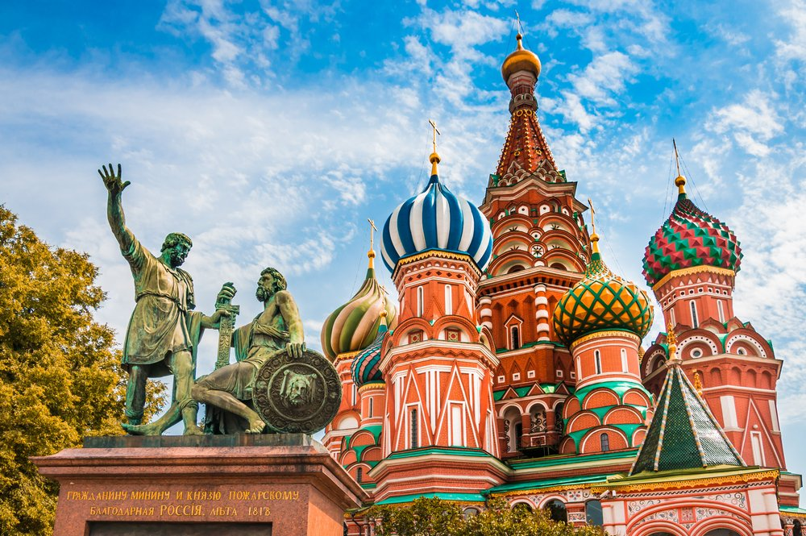
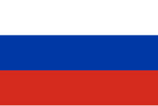

Trip Around The World
Mazatlan, Sinaloa, Mexico

- Population: 502,547
- Latitude: 23°14'29''N Longitude: 106°24'35''O
Mazatlán is a coastal city located in the state of Sinaloa, in northwestern Mexico. It is known for its beautiful beaches, vibrant nightlife, and rich cultural heritage. The city features attractions such as its waterfront boardwalk, historic center with colonial architecture, and its important fishing port. Mazatlán is also famous for its Carnival, one of the largest and most colorful in Mexico. Additionally, it offers a range of outdoor activities, including fishing, surfing, and water sports.
CDMX, Mexico

- Population: 8,855,000
- Latitude: 19°25'57''N Longitude: 99°07'59''W
Mexico City (CDMX) is the capital and political, economic, cultural, and social hub of Mexico. With a history that dates back to the ancient Aztec capital of Tenochtitlan, CDMX is one of the largest and most populous cities in the world. It stands out for its rich historical heritage, with a blend of pre-Hispanic, colonial, and modern architecture.
Moscow, Rusia
- Population: 13,100,000
- Latitude: 55°45'21''N Longitude: 55°45'21''N
Moscow is the capital and largest city of Russia, serving as its political, economic, and cultural center. Founded in the 12th century, it has played a key role in Russian history and is home to iconic landmarks such as the Kremlin, Red Square, and Saint Basil's Cathedral.